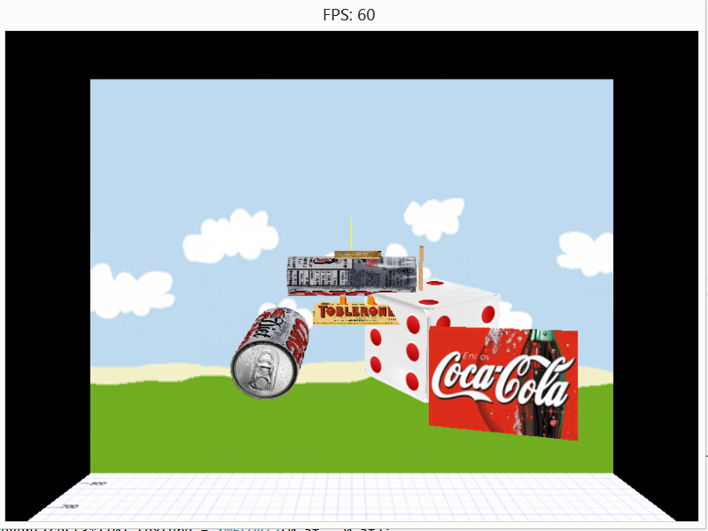

COMP 2501 - Winter 2014 Tutorial #5
Texture Mapping our Game Objects
Description:
In this tutorial we will complete our texture mapping. This time we will texture map our game models like: cube model, prism model and consequently our airplane and your car from the previous tutorials. For this we have made a few changes to the code architecture as will be explained below. You should browse the code and see that you follow the new organization.
IMPORTANT: We are now getting to the point where you will not likely be able to complete the tutorial in only the 1.5 hour tutorial slot. You are expected to be working on this at home before the tutorial.
This tutorial also makes use of the DirectXTK toolkit. Hence you will see a second project in the visual studio solution. To open the code navigate to the visual studio solution file: Tutorial 05 Demo Code/Engine/Engine, right click on it and open with Visual Studio 2012. Later we will discuss how you can install DirectXTK from scratch but here we just rely on the code already assembled for you.
To get credit for the tutorial you must complete, or make significant progress, on the problems provided and demonstrate your results to the tutorial TA.
These tutorials are based loosely on the Rastertek set of tutorials but don't involve the DirectXSDK, instead the use the WindowsSDK which is built into the Windows 8 operating system.
Instructions:
Texture Mapping our Game Models
Overview
Open Microsoft Visual Studio 2012 and open demo project found in the tutorial 05 demo folder. Compile and Run the project, it should build and open a bordered window like that shown below. Again, some extra's are also implemented: a frame-per-second counter that appears as the window title area, and a "side car" console window to which camera move operations are written. These are meant to be aids in future debugging. There is a line of code a the top of main.cpp like the following.
static bool use_debug_console = true;
Set the boolean to false if you don't want the extra console window.

The demo code creates the objects from the previous tutorials now as instances of CubeTexturedModel, PrismTexturedModel, QuadTexturedModel and our airplane is now a float plane with pontoons built out of these primitive models. The textured models are now texture mapped instead of coloured. You can fly the plane around with the arrow keys and bring it closer for inspection. In order to do this we have made some significant changes to the code architecture from the previous tutorials. Here is a summary.
In the previous tutorials it was possible for a geometric model to be easily described by a single array of coloured vertices or a single array of U-V texture mapped vertices but with a single texture file. Now we need to have multiple texture files for our cubes and prisms. To do this we have changed the code so that the GraphicsClass no longer asks the model objects for their geometries in oder to render them using the appropriate direct3D graphics device, projection and view matrices. Instead, the GraphicsClass now passes the device, projection and view matrices to the individual model objects and asks them to render themselves. This is a typcial object-oriented way of doing things. ("Never do for an object what it can be asked to do for itself".) The result is that now the models can have as many vertex arrays or textures as they want.
The GameModel class has also been changed to only keep track of the orientation and translations applied to the model objects. It no longer concerns itself with the vertex arrays. The code has thus become much cleaner and the GameModel objects no longer have to keep track of whether they are coloured or textured models, or be required to give out their geometries. The GraphicsClass simply asks game models to render themselves.
So to do these exercises you need to re-examine the code for the GameModel, and all is various subclasses: CubeModel, CubeTexturedModel, PrismModel, PrismTexturedModel, QuadModel, QuadTexturedModel and the new version of the AirPlane class. Once you feel comfortable with that use them as templates to complete the following exercises.
Exercise 1)
In tutorial #3 you were asked to build a "traffic cone" shape. Using the new PrismTexturedModel as a template build a ConeTexturedModel class and then create one of these in the game and texture map it with a texture of your choice. (If you built some other shape in tutorial #3 feel free to do a textured version of that shape instead.)
Remember if you want to use images as textures you need to convert them to .dds textures as per the previous tutorial. (The demo code has a bunch of texture images and also some .dds textures in the textures folder within the code.)
Exercise 2)
In tutorial #3 you were asked to build a car with wheels. This timem using the new CubeTexturedModel and PrismTexturedModel etc. and using the Airplane class as a guide, create a new car object that has textured parts. Use the carWheel.dds and tireTread.dds textures provided to make the wheels for your car (or get even nicer textures elsewhere if you want). The body of your car should also be texture mapped with whatever texture you want.
Exercise 3)
Modify the code so that you can drive the car with the arrow keys and so that the wheels of the car turn when it is moving. You don't have to worry about the wheels gradually speeding up or slowing down, just that they rotate when the car is moving and the rotation stops when the car is stopped. (Obviously the wheels should rotate in the proper direction). With the texture mapped wheels is will be easy to see them rotate.
Optional Exercise
It would be really nice if the airplane propeller could be made to look like a popsicle stick (with rounded ends). This optional exercise is to do that. If you do this and you like your solution, email it to me (ldnel@scs.carleton.ca) and I will post it for others to enjoy.
When you have completed the required exercises demonstrate your code to the TA's to get credit for the tutorial.